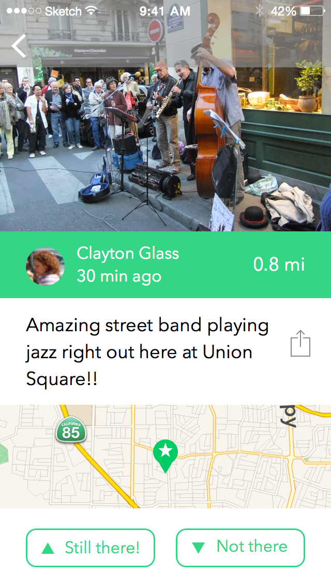
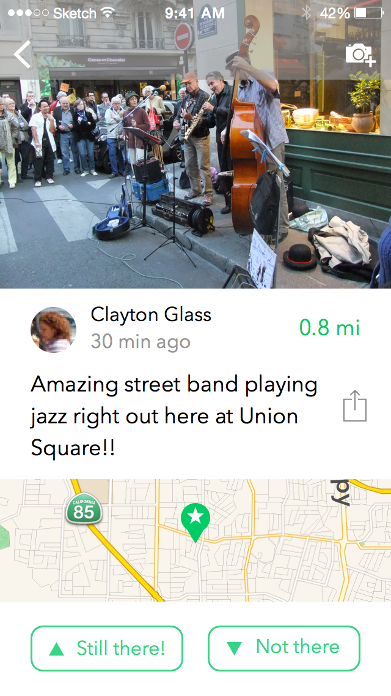
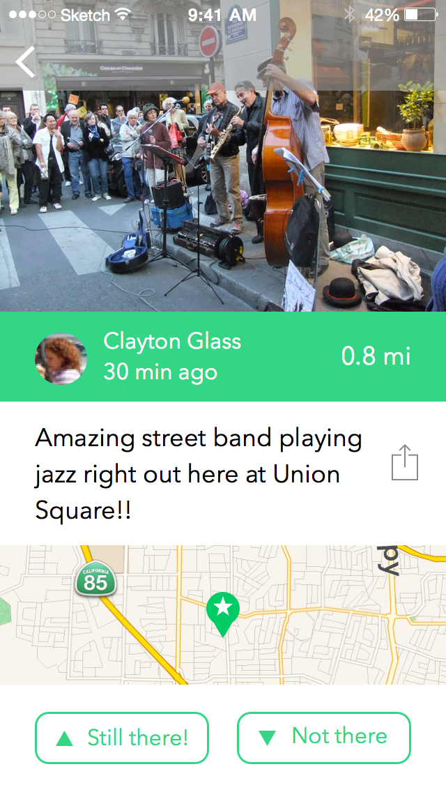
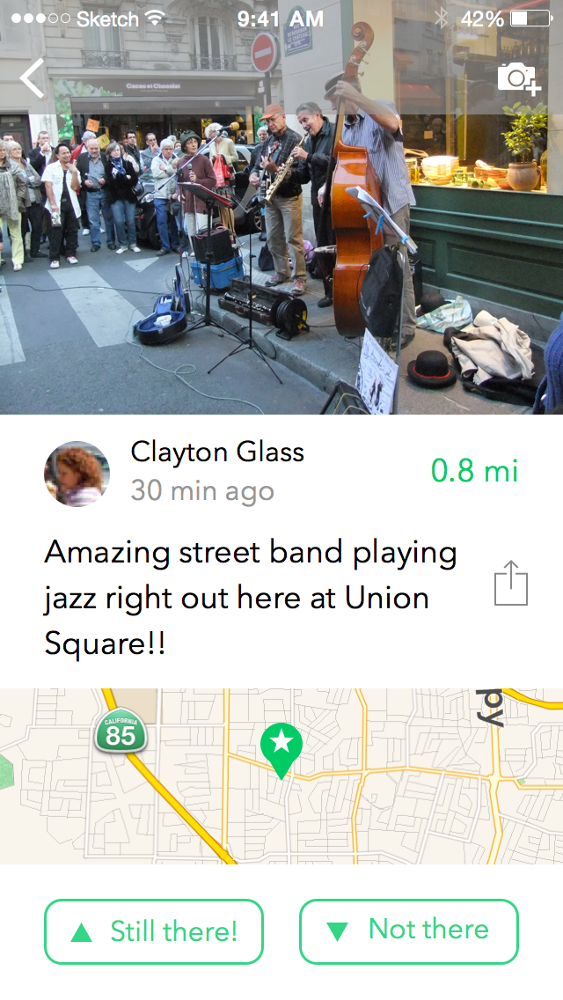
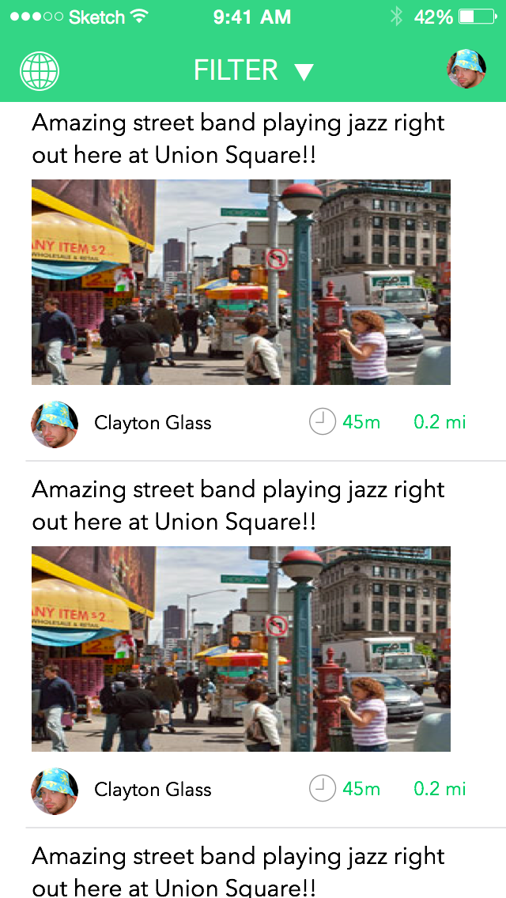
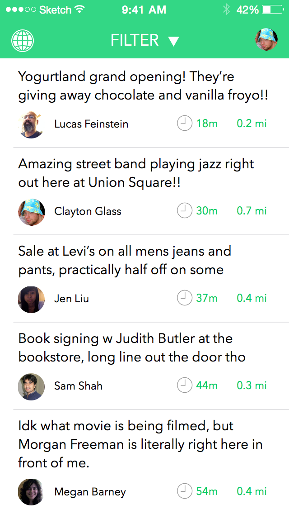
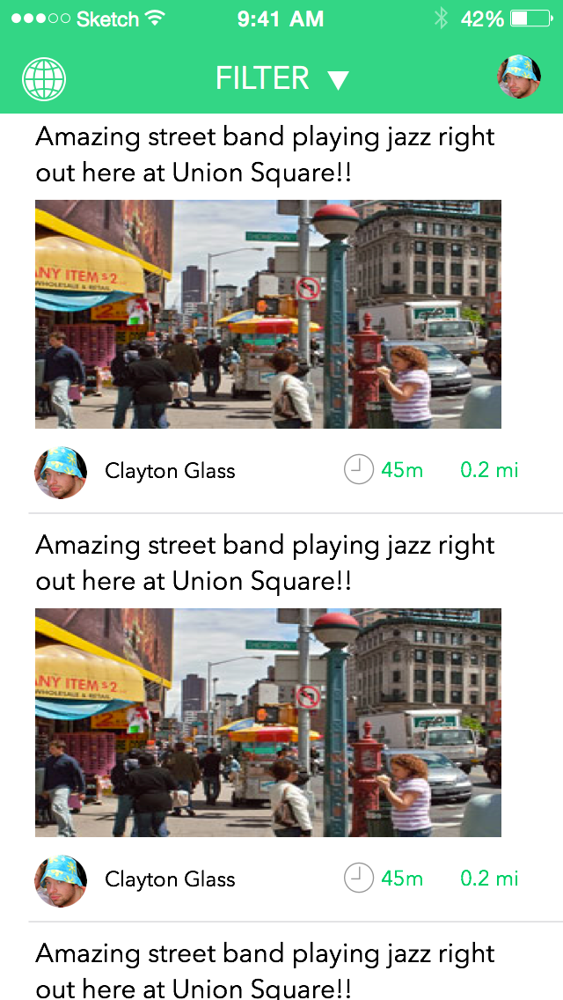
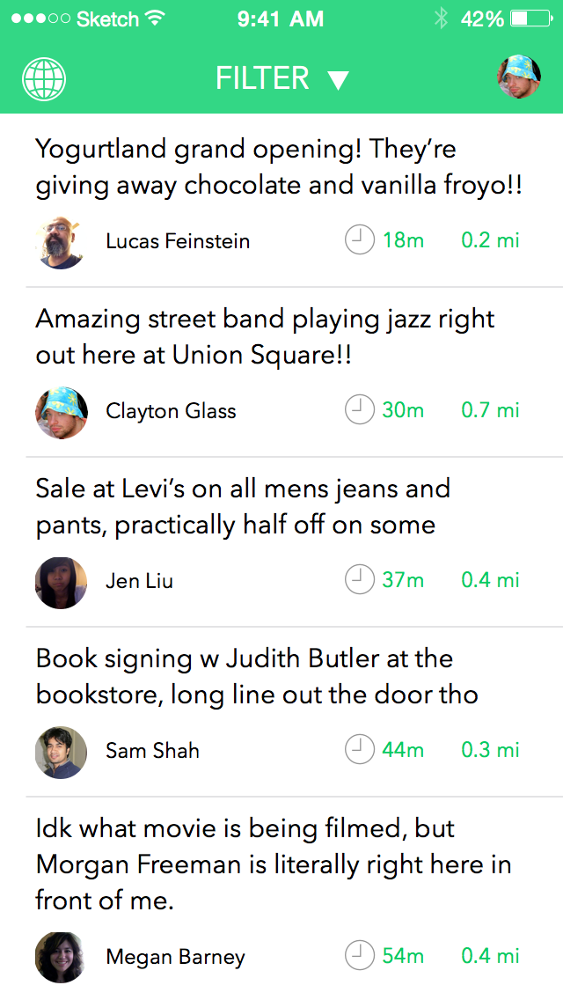

I'm currently an engineering student at Columbia, interested in product and strategy. At school, I'm involved with CORE, ADI Labs, and the Makerspace.
If you'd like to get in touch, you can email me at sahir.jaggi@columbia.edu!
Sahir Jaggi
I'm currently an engineering student at Columbia, interested in product and strategy. At school, I'm involved with CORE, ADI Labs, and the Makerspace.
If you'd like to get in touch, you can email me at sahir.jaggi@columbia.edu!
As a product intern at Boomerang, I worked on onboarding, analytics, and user testing for the new Microsoft Office 365 plugin. I also wrote design and product specifications for a new iOS app, an existing Android app (update to Google Material Design), and an internal applicant tracker webapp.
Radius is an iOS app that keeps you from missing out on what’s going on around you. Discover little publicized or spontaneous events posted by others in your area.

Radius is an iOS app that keeps you from missing out on what’s going on around you. Discover little publicized or spontaneous events posted by others in your area.

My friend, Matt Piccolella, and I began working on this project last semester to help us learn the processes of designing and developing an app, as neither of us had any experience with creating native apps for the app store.
Last summer, we lived in SoHo, which allowed us to take advantage of spontaneous activities and events. Sometimes, though, we had feelings of fomo and frustration when we missed things we could have easily been at.
With that frustration, Radius was born as a way to discover and share spontaneous and little publicized events.
EXPLORATION & ITERATION
Creating mocks with different color arrangements and styles allowed us to select that which felt most natural. Early on we had much more green throughout the app, but we decided it would be easier to read with white in general.
The green is used only for highlights and the navigation bar for the main pages, map view, stream view, and profile/settings. The add and detail pages have minimal green.

 



EXPLORATION & ITERATION
Both for the map preview and the stream view, we thought about showing the attached pictures in posts, even though we expect users to click through based on the descriptions.
We decided against including images from the stream view, as we felt that scroll/search velocity would be compromised unnecessarily with pictures.
 



Fire is my team's project for ADI Labs, a program that provides students with an opportunity to work on open-source projects in groups. Enter a link (currently music but soon expanding to anything) to have it analyzed and find out exactly how fire it is.
Scuttlebug is a project that is designed to allow you to read and discuss with your friends and colleagues. As a web and mobile app, it will enable you to subscribe to news outlets, recommend articles to friends, and discuss articles in groups.


I'm currently in my third year of completing a B.S.E., studying Biomedical Engineering and Computer Science. I spend a lot of my time working on various initiatives through CORE, ADI, and the Makerspace. Right now, I'm focusing on on JADE and ADI Labs.